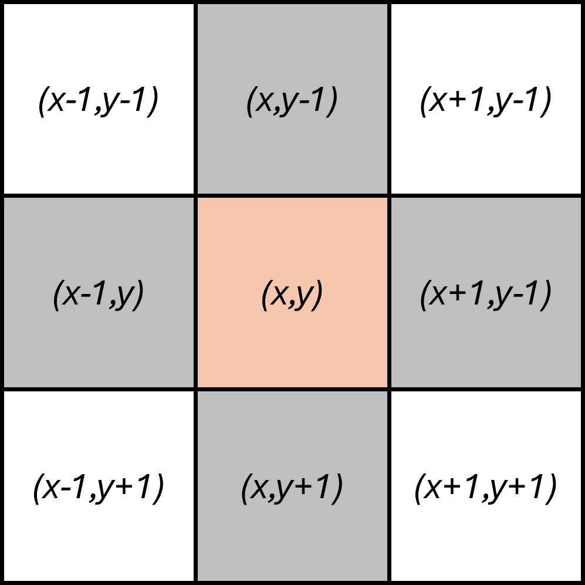
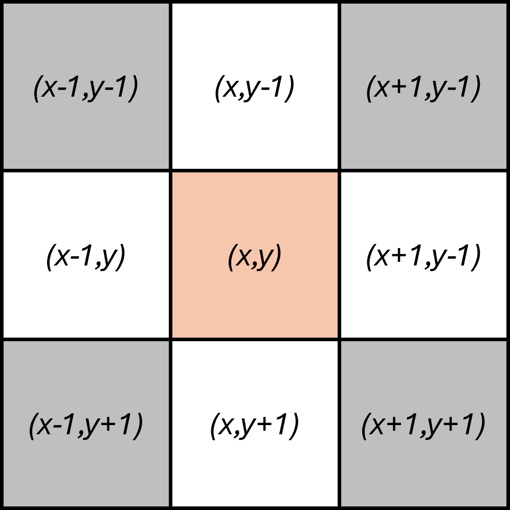
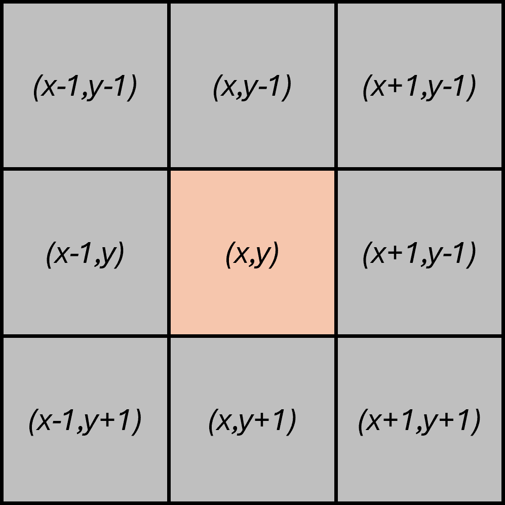

Procesado de Señales e Imágenes Médicas
Ingeniería Biomédica
Procesamiento de imágenes
Relationships between pixels – Neighborhood



Relationships between pixels – Adjacency
4-Adjecncy: Two pixels p and q with values from V are 4-adjacent if q is in the set \(N_4\left(p\right)\)
8-adjacency. Two pixels p and q with values from V are 8-adjacent if q is in the set \(N_8\left(p\right)\)
m-adjacency (also called mixed adjacency). Two pixels p and q with values from V are m-adjacent if:
- q is in \(N_4\left(p\right)\).
- q is in \(N_D\left(p\right)\) and the set \(N_4\left(p\right) \cap N_4\left(q\right)\) has no pixels whose values are from V.
Relationships between pixels
Relationships between pixels
{kind=link}
{kind=link}
{kind=link}
Relationships between pixels – Path
It is a sequence of adjacent pixels.
\[\left(x_0, y_0\right), \left(x_1, y_1\right), \left(x_2, y_2\right), \dots \left(x_n, y_n\right)\]
If \(\left(x_0, y_0\right)=\left(x_n, y_n\right)\) the path is known as closed path
Let S represent a subset of pixels in an image. Two pixels p and q are said to be connected in S if there exists a path between them consisting entirely of pixels in S.
Relationships between pixels – Path, Connected Subset
{kind=link}
Relationships between pixels – Regions
{kind=link}
Relationships between pixels – Boundary
{kind=link}
Relationships between pixels – Distance
{kind=link}
- City block distance: \(D_4\left(p,q\right) = \lvert x-u\rvert + \lvert y-v \rvert\)
- Chessboard distance: \(D_8\left(p,q\right) = max \left(\lvert x-u\rvert , \lvert y-v \rvert \right)\)
- Euclidean distance: \(D_e\left(p,q\right) = \sqrt{\left(x-u\right)^2 + \left(y-v\right)^2}\)
Relationships between pixels
{kind=link}
- City block distance: \(D_4\left(p,q\right) = \lvert x-u\rvert + \lvert y-v \rvert\)
- Chessboard distance: \(D_8\left(p,q\right) = max \left(\lvert x-u\rvert , \lvert y-v \rvert \right)\)
- Euclidean distance: \(D_e\left(p,q\right) = \sqrt{\left(x-u\right)^2 + \left(y-v\right)^2}\)